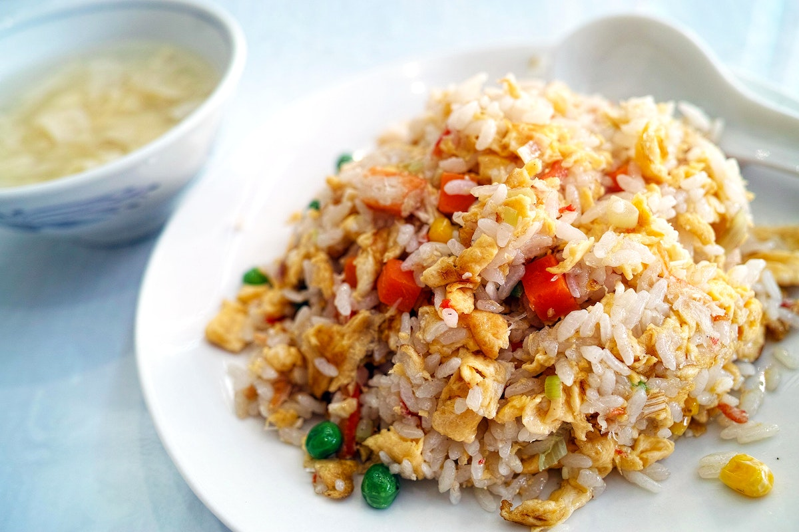

Fried Rice

Description
Fried rice is a traditional yet timeless dish, often seen in chinese dining.
What makes fried rice special is how it can taste good with lots of different ingredients, and it can be made easily.
Ingredients
- rice
- egg
- spring onion
- soy sauce
- shrimp
Steps
- Prepare the rice beforehand
- Cut the spring onion
- Fry the rice with the spring onion and shrimp
- Fry the egg into an omelette
Home